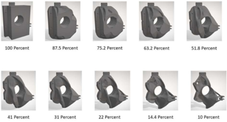
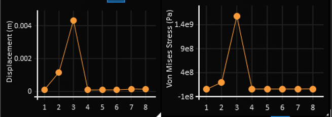
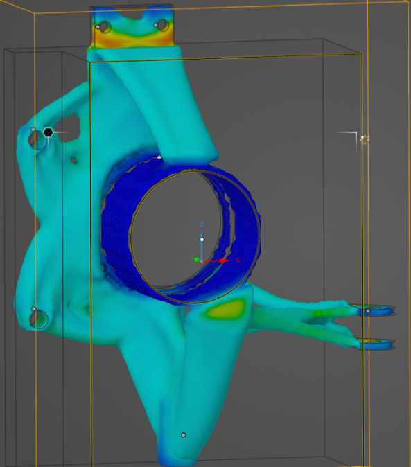
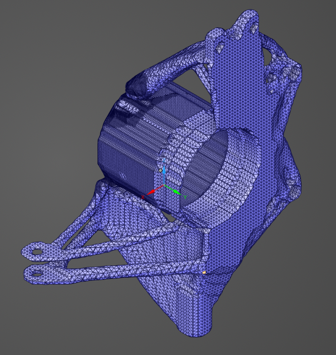
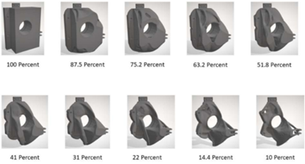
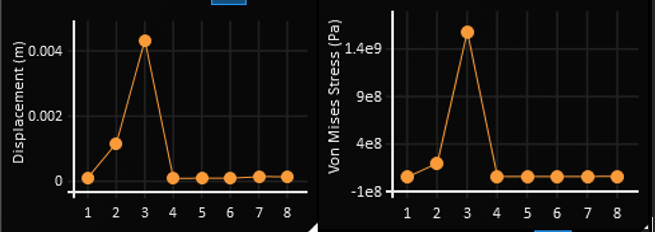
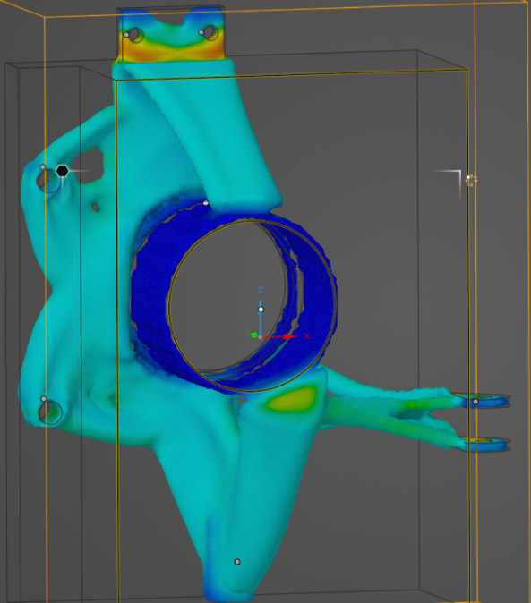
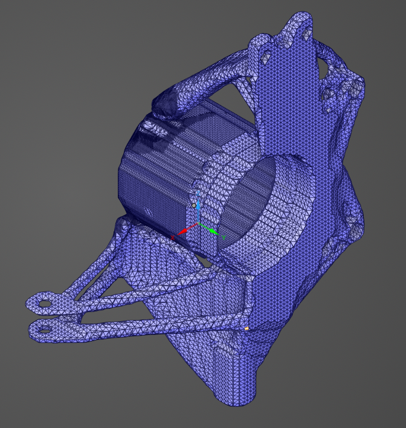

Suspension Uprights Top-Op
 







Abstract:
The design of a Formula 1 suspension upright is a critical engineering challenge that requires balancing
structural stiffness, mass minimization, and the time and cost associated with manufacturability and
computational mechanics. With the right balance, these objectives can be optimized. This report presents a
topology optimization approach to redesigning suspension uprights while satisfying performance constraints
including stress limits, deflection requirements, and dynamic behavior. Finite Element Analysis (FEA)
using Ansys Discovery is used to evaluate multiple loading scenarios, including braking and cornering
forces, and ensure the optimized design meets real-world operational demands. The optimization process
incorporates material selection, defining simulation objectives, and implementing manufacturing
constraints for additive manufacturing techniques. The final design aims to reduce weight while
maintaining structural integrity. This project was conducted as part of the 2019 USACM Thematic Conference
- Topology Optimization Roundtable, a design challenge presented to collegiate Formula 1 teams to identify
innovative engineering solutions for additive manufacturing.
Physics-Based Modeling and Engineering Analysis:
Suspension uprights are subjected to a combination of forces [N], including braking, cornering, and impact
loads. To accurately design and optimize this component, engineers rely on physics-based modeling
techniques, such as: Finite Element Analysis (FEA) - used to simulate stress distributions, deflections,
and failure points under various loading conditions.
In addition to FEA, material selection plays a critical role in the design process. Engineers evaluate
material properties (e.g., density, yield strength, thermal conductivity) to choose the best material for
the application. For this project, Aluminum 6061-T6, Titanium 6Al-4V, and Stainless Steel 304 were
presented based on their mechanical properties, weight, and suitability for additive manufacturing.
The uprights were subjected to the following loads:
| Case | Inside Cornering [N] | Outside Cornering [N] |
|---|---|---|
| C1 | -50 | 140 |
| C2 | -150 | 645 |
| C3 | 380 | 1920 |
| C4 | 45 | -1750 |
| C5 | 175 | -3975 |
| C6 | -85 | 405 |
| B1 | -2500 | 390 |
| B2 | 1700 | -340 |
| B3 | 2160 | 360 |
| B4 | 4500 | -1100 |
| B5 | -6500 | 800 |
| B6 | 2170 | -425 |
| B7 | 20200 [N-mm] | -4200 [N-mm] |
Optimization in Ansys Discovery:
Ansys Discovery uses a gradient-based optimization algorithm to solve the topology optimization problem. This algorithm iteratively adjusts the material distribution within the design domain to minimize the objective function (e.g., compliance or mass) while satisfying constraints. At each iteration, the finite element analysis (FEA) is performed to evaluate the structural response under the applied loads. The densities are then updated based on the sensitivity of the objective function to changes in density. This process continues until the solution converges to an optimal material distribution that meets the design goals.
Results and Analysis:
The optimization process underwent multiple iterations to refine material distribution and achieve a design that met all constraints. Initially, a baseline simulation identified regions of high stress and excess material. Subsequent iterations adjusted the volume fraction and overhang prevention angle to enhance manufacturability and structural efficiency. The final design was achieved using a 10% volume fraction with a 20° overhead angle constraint. The final design and its results are shown below:
- Mass: 0.64 [kg]
- Maximum von Mises Stress: 113 [MPa] (below the 250 MPa limit)
- Maximum Deflection: 0.114 [mm] (within the 0.12 mm constraint)
- Resonant Frequency: 180.05 [Hz] (above the 75 Hz requirement)
- Factor of Safety (FOS): 2.28
- Computing Time: 2.5 [hrs]
Conclusion:
Trade-Offs and Final Design Evatuation: The optimization process involved balancing competing objectives. First, mass and deflection: reducing the volume fraction slightly increased deflection, so a balance had to be chosen between the two. Secondly, material selection tradeoffs had to be balanced. Aluminum 6061-T6 provided weight savings and thermal benefits but required careful stress management as opposed to titanium or steel. Lastly, for manufacturability constraints such as overhang prevention and minimum member thickness ensured feasibility for additive manufacturing but imposed geometric limitations.
Challenges and Considerations: When setting up the simulation, there are many challenges that can yield inaccurate results. One such challenge is ensuring proper load paths. Without a load path that connects the loading location to the main body, the simulation can yield geometries with detached components. Additionally, the minimum geometry thickness must be chosen such that all members are larger than it. Lastly, if the forces aren’t sufficient enough, not enough material will be removed to make an impactful result.
Validation and Verification: To validate the effectiveness of the design, it was rerun through Ansys Mechanical to recalculate the stresses throughout the part. While the results were not exactly the same as the topology simulation had suggested, it did show that the part still met all of the design constraints. Stress concentrations occur at areas of rapidly changing geometry (e.g., holes, changing thickness) and the maximum Von Mises stress shown in red is about 118 [MPa].